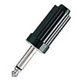
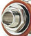
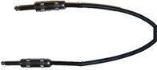

| Plug | A plug is a connector that is inserted into a receptacle-styled connector. Often referred to as a 'male' gender connector. These come in a variety of shapes and sizes |  |
| Jack | A jack is a receptacle-type connector which accepts a plug. Often called a 'female' gender connector. These, too, come a variety of shapes and sizes. |  |
| Patch Cord | A patch cord is a cable with a plug or jack on either end and is used to connect various devices. The cable itself may take many forms, with two or more wires, either bundled around one another (coaxially) or next to one another in a sheath. Cables that will exceed a length of 20 feet should be 'balanced,' with special shielding involving a third wire, and will usually have special plugs or jacks with extra pins for the extra wiring. |  |
| Adapter | Adapters are devices that change the size, shape, or gender of one plug or jack to another. These are often required when the specific plugs or jacks needed to connect two devices are not available on a given patch cord. |  |